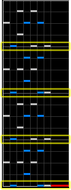
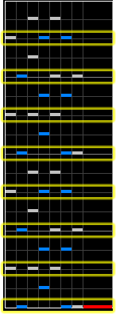

📑 文章目录（3 节）
不知道是不是受本博客的影响，最近在 Twitter 等平台上经常能看到大家提起横向读谱（横认识）这个词。
本文将讲解“横向读谱（横认识）”以及与之相对的“纵向读谱（纵认识）”之间的区别。
纵向读谱（纵认识）

面对这样的谱面，很多新手应该会将其理解为“1键和3键的交互（Trill）＋其他键”。
这种读谱方式就叫做纵向读谱（纵认识）。
以这张谱面为例，纵向读谱的好处在于，你不需要把注意力分给左半边的 1-3 交互。
但反过来说，正因为没有分配注意力，这也带来了“容易沾癖（练出坏癖）”的缺点。
横向读谱（横认识）

现在试着把原本看作“1和3的交互＋其他键”的谱面，拆成 [1＋7]→[3]→[1]→[3＋7]→… 这样一拍一拍切分开来识别。这就是横向读谱（横认识）。
这种读谱方式的优势在于，即便是“交互＋其他键”这类极易沾癖的谱面，也能全部视作“单押”与“同时押”的连续组合来读取，因此不易沾癖。
“硬按（ガチ押し）理论”同样是以这种横向读谱的思路为基础的。
根据 BPM 改变横向读谱的切分单位
在 BPM140 以下的慢速谱面中，只要经过练习，是可以逐个以 16 分音符为单位进行横向读谱的。
一旦超过这个 BPM，就会突破逐个横向读谱的极限，因此通常需要改成按 4 分音符或 8 分音符为单位切分，以减轻读谱负担。


感觉上就是盯紧黄色框圈出来的部分，尽量不让节奏和拍点跑偏。
如果做不到的话，不妨
- 试着改变读谱方式
- 试着调整绿数字
- 试着调整 SUD+（上遮罩/挡板）
多做各种尝试看看吧。